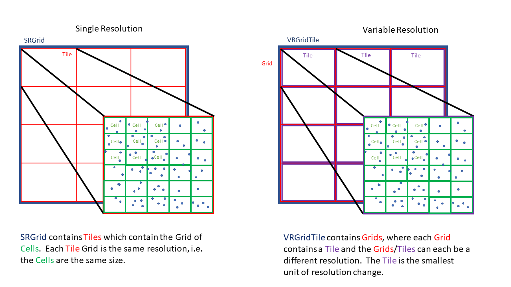

Data Structures¶
There are two main data structures in the Kluster software: the processed multibeam data (Fqpr) and the gridded dataset (Bathygrid). Here we will talk about both of these in detail, as well as the lightweight project structure that holds both. Let’s start with an example:

Here we see the three main elements as they are generated in Kluster.
You drag in a new multibeam file, start the conversion process and see a new folder (“EM2040_40111_05_23_2017” in our case) appear next to the multibeam file with a similar entry in the Kluster application under ‘Converted’. This is the Fully Qualified Ping Record structure that Kluster uses to hold all the converted multibeam/sound velocity/positioning data as well as all the intermediate and fully processed multibeam records.
At the same time, a ‘kluster_project.json’ file, the project file, is created which holds your project settings and the paths to the different folders. Unless you want to use the project file to manage large projects, this can basically be ignored, and you can just work with the data folders, dragging in new folders to view in Kluster.
Finally, after fully processing the data, you can create a new surface, which we show here as the ‘vrtilegrid_mean’ folder, which tells you that this is a VR surface created in Bathygrid using the ‘mean’ algorithm to determine the value in each cell of the grid.
Let’s discuss each of these in more detail.
Fully Qualified Ping Record¶
The Fully Qualified Ping Record (FQPR) is the data structure that contains all of the converted, intermediate and final multibeam data. When converting data through the GUI (which uses the Kluster Intelligence module), each converted folder represents one FQPR object, which represents one sonar for one day’s worth of data.
“EM2040_40111_05_23_2017” = A Kongsberg EM2040 with serial number 40111 with data only during the day of May 23, 2017
You can actually use Kluster to just convert any lines to a folder, but the Kluster GUI forces you to use this scheme. This allows you to drag in files from anywhere, knowing nothing about where they come from or which sensor they belong to, and Kluster will automatically organize them into neat little datasets.
So let’s talk about what is in one of these FQPR objects. We’ll use the console to reload a processed FQPR dataset and print the summary. Note that ‘reload_data’ is the function used to reload FQPR data when you drag the folder into the GUI as well. I’m just showing it on the console to illustrate a few things.
> from HSTB.kluster.fqpr_convenience import reload_data
> fq = reload_data(r"C:\collab\dasktest\data_dir\outputtest\tj_patch_test_2040")
Starting local cluster client...
<Client: 'tcp://127.0.0.1:58960' processes=8 threads=16, memory=34.27 GB>
****Reloading from file C:\collab\dasktest\data_dir\outputtest\tj_patch_test_2040****
Successfully reloaded
> fq
Out[4]:
FQPR: Fully Qualified Ping Record built by Kluster Processing
-------------------------------------------------------------
Contains:
1 sonar head, 56662 pings, version 0.7.11
Start: Tue Mar 17 06:28:55 2020 UTC
End: Tue Mar 17 09:51:22 2020 UTC
Minimum Latitude: 37.24927016765822 Maximum Latitude: 37.250005179442404
Minimum Longitude: -76.08749809374879 Maximum Longitude: -76.08357163911866
Minimum Northing: 4122665.067 Maximum Northing: 4123756.035
Minimum Easting: 403547.631 Maximum Easting: 403941.398
Minimum Depth: 12.287 Maximum Depth: 42.907
Current Status: tpu complete
Sonar Model Number: em2040
Primary/Secondary System Serial Number: 40072/0
Horizontal Datum: 6347
Vertical Datum: NOAA MLLW
Navigation Source: sbet
Sound Velocity Profiles: 1
The print out summary for the FQPR record shows some of the useful attributes for the object. You can access them pretty readily using the properties as well.
> fq.min_time
Out[5]: 'Tue Mar 17 06:28:55 2020 UTC'
> fq.max_time
Out[6]: 'Tue Mar 17 09:51:22 2020 UTC'
> fq.sonar_model
Out[7]: 'em2040'
> fq.status
Out[8]: 'tpu'
To get at the data however, you’ll need to access the multibeam object. The multibeam object contains the Xarray Datasets for the ping records and the attitude records, which are the two datasets contained within the FQPR data structure.
> fq.multibeam.raw_ping
Out[9]:
[<xarray.Dataset>
Dimensions: (beam: 400, time: 56662, xyz: 3)
Coordinates:
* beam (beam) int32 0 1 2 3 4 5 ... 395 396 397 398 399
* time (time) float64 1.584e+09 1.584e+09 ... 1.584e+09
* xyz (xyz) <U1 'x' 'y' 'z'
Data variables: (12/43)
acrosstrack (time, beam) float32 dask.array<chunksize=(1000, 400), meta=np.ndarray>
alongtrack (time, beam) float32 dask.array<chunksize=(1000, 400), meta=np.ndarray>
altitude (time) float32 dask.array<chunksize=(1000,), meta=np.ndarray>
beampointingangle (time, beam) float32 dask.array<chunksize=(1000, 400), meta=np.ndarray>
corr_altitude (time) float64 dask.array<chunksize=(1000,), meta=np.ndarray>
corr_heave (time) float64 dask.array<chunksize=(1000,), meta=np.ndarray>
... ...
tx (time, beam, xyz) float32 dask.array<chunksize=(1000, 400, 3), meta=np.ndarray>
txsector_beam (time, beam) uint8 dask.array<chunksize=(1000, 400), meta=np.ndarray>
x (time, beam) float64 dask.array<chunksize=(1000, 400), meta=np.ndarray>
y (time, beam) float64 dask.array<chunksize=(1000, 400), meta=np.ndarray>
yawpitchstab (time) <U2 dask.array<chunksize=(1000,), meta=np.ndarray>
z (time, beam) float32 dask.array<chunksize=(1000, 400), meta=np.ndarray>
Attributes: (12/53)
_compute_beam_vectors_complete: Thu Sep 30 15:39:26 2021
_compute_orientation_complete: Thu Sep 30 15:38:41 2021
_conversion_complete: Thu Sep 30 15:37:47 2021
_georeference_soundings_complete: Thu Nov 4 21:22:56 2021
_sound_velocity_correct_complete: Thu Sep 30 15:39:46 2021
_soundings_last_cleaned: Thu Oct 28 18:35:49 2021
... ...
system_identifier: 40072
system_serial_number: [40072]
units: {'acrosstrack': 'meters (+ starboard)'...
vertical_crs: COMPOUNDCRS["NAD83(2011) + MLLW depth"...
vertical_reference: NOAA MLLW
xyzrph: {'beam_opening_angle': {'1584426535': ...]
> fq.multibeam.raw_att
Out[10]:
<xarray.Dataset>
Dimensions: (time: 192975)
Coordinates:
* time (time) float64 1.584e+09 1.584e+09 ... 1.584e+09 1.584e+09
Data variables:
heading (time) float32 dask.array<chunksize=(20000,), meta=np.ndarray>
heave (time) float32 dask.array<chunksize=(20000,), meta=np.ndarray>
pitch (time) float32 dask.array<chunksize=(20000,), meta=np.ndarray>
roll (time) float32 dask.array<chunksize=(20000,), meta=np.ndarray>
Attributes:
reference: {'heading': 'reference point', 'heave': 'transmitter', 'pitch...
units: {'heading': 'degrees', 'heave': 'meters (+ down)', 'pitch': '...
This corresponds to the folders within the “EM2040_40111_05_23_2017” folder. You’ll see they are saved in the zarr format, which is a compressed chunked data format. There are matching ‘sync’ folders, which are there for file locking and multiprocessing access.

You might have noticed that raw_ping is a list. Each sonar head corresponds to an element in the list, for most sonars that only have one head this will always be a single element list.
Xarray allows you to do things like quickly interpolate one dataset to the coordinates of another. A common thing you might want to do is get the attitude records for the nearest ping time. You might ask why the two datasets are kept separate in the first place. I use the full attitude record to get the attitude during the ping across the array, which I found to improve the accuracy of the beam vector generation. Anyway, to get the attitude at ping time, you simply:
> fq.multibeam.raw_att.interp_like(fq.multibeam.raw_ping[0])
Out[11]:
<xarray.Dataset>
Dimensions: (time: 56662)
Coordinates:
* time (time) float64 1.584e+09 1.584e+09 ... 1.584e+09 1.584e+09
Data variables:
heading (time) float32 dask.array<chunksize=(56662,), meta=np.ndarray>
heave (time) float32 dask.array<chunksize=(56662,), meta=np.ndarray>
pitch (time) float32 dask.array<chunksize=(56662,), meta=np.ndarray>
roll (time) float32 dask.array<chunksize=(56662,), meta=np.ndarray>
Attributes:
reference: {'heading': 'reference point', 'heave': 'transmitter', 'pitch...
units: {'heading': 'degrees', 'heave': 'meters (+ down)', 'pitch': '...
The dataset is organized into three main containers: coordinates, variables and attributes.
Attributes¶
Attributes is the simplest, and powers the attributes window in the Kluster GUI.
> fq.multibeam.raw_ping[0].attrs
Out[4]:
{'_compute_beam_vectors_complete': 'Thu Sep 30 15:39:26 2021',
'_compute_orientation_complete': 'Thu Sep 30 15:38:41 2021',
'_conversion_complete': 'Thu Sep 30 15:37:47 2021',
'_georeference_soundings_complete': 'Thu Nov 4 21:22:56 2021',
'_sound_velocity_correct_complete': 'Thu Sep 30 15:39:46 2021',
'_soundings_last_cleaned': 'Thu Oct 28 18:35:49 2021',
'_total_uncertainty_complete': 'Thu Nov 4 21:23:30 2021',
'attributes_1584426535': '{"location": [37.247024140413025, -76.08538681698856], "source": "multibeam"}',
'current_processing_status': 5,
...

The attributes window in Kluster shows the attributes from both datasets for you to view. Here is a description of the attributes in the datasets.
_compute_beam_vectors_complete - the time of the last beam correction process, this is the second step in the Kluster processing pipeline
_compute_orientation_complete - the time of the last orientation process, this is the first step in the Kluster processing pipeline
_conversion_complete - the time of the last conversion process, the step that builds the Kluster datasets
_georeference_soundings_complete - the time of the last georeferencing process, the fourth step in the Kluster processing pipeline
_sound_velocity_correct_complete - the time of the last sound velocity correction process, the third step in the Kluster processing pipeline
_soundings_last_cleaned - the time of the last sounding rejection process, either through filter or manually cleaning soundings in Points View
_total_uncertainty_complete - the time of the last TPU process, the fifth step in the Kluster processing pipeline
attributes_XXXXXXXXXXX - the attributes corresponding to a sound velocity profile, the XXXXXXXXXXX represents the time of the profile in UTC seconds
current_processing_status - the current status of the FQPR record, the last successful process run, see ‘status_lookup’
geohashes - the geohash regions that each line goes through, see ‘Learn more about Kluster - Geohashes’
horizontal_crs - the epsg for the horizontal coordinate reference system that we used to build the ‘x’ ‘y’ and ‘z’ data
input_datum - the datum descriptor for the raw navigation from the multibeam data
installsettings_XXXXXXXXXXX - the installation record in its raw form from the multibeam data, the XXXXXXXXXXX represents the time of the record in UTC seconds
kluster_version - the version of Kluster used to produce this data
kluster_convention - The sign convention for the 6 axes used in Kluster
max_lat - the maximum latitude from the Latitude variable that we get from the raw multibeam data
max_lon- the maximum longitude from the Latitude variable that we get from the raw multibeam data
max_x - the maximum easting that we get from the georeference process in Kluster
max_y - the maximum northing that we get from the georeference process in Kluster
max_z - the maximum depth that we get from the georeference process in Kluster
min_lat - the minimum latitude from the Latitude variable that we get from the raw multibeam data
min_lon- the minimum longitude from the Latitude variable that we get from the raw multibeam data
min_x - the minimum easting that we get from the georeference process in Kluster
min_y - the minimum northing that we get from the georeference process in Kluster
min_z - the minimum depth that we get from the georeference process in Kluster
multibeam_files - the multibeam files in this dataset provided with [start time, end time, start latitude, start longitude, end latitude, end longitude, azimuth]
nav_error_files (IF SBET ERROR IS PROVIDED) - the smrmsg files used in this dataset with the start and end times of the file in week seconds
nav_files (IF SBET IS PROVIDED) - the sbet files used in this dataset with the start and end times of the file in week seconds
navigation_source - either ‘sbet’ if sbet was used during georeferencing or ‘multibeam’ if raw navigation from the multibeam data was used
output_path - the current location of the FQPR object
profile_XXXXXXXXXXX - the sound velocity profile data (depth vs sound speed), the XXXXXXXXXXX represents the time of the cast in UTC seconds
reference - the reference point for each applicable variable
runtimesettings_XXXXXXXXXXX - the raw runtime parameters entry from the multibeam data, the XXXXXXXXXXX represents the time of the record in UTC seconds
sbet_datum (IF SBET IS PROVIDED) - the coordinate system of the sbet, either ‘NAD83’ or ‘WGS84’
sbet_logging rate (hz) (IF SBET IS PROVIDED) - the logging rate of the sbet
sbet_mission_date (IF SBET LOG IS PROVIDED) - the date of the POSPac project
secondary_system_serial_number - if this is a dual head sonar, this is a list containing the serial number of the second head
sonartype - the sonar model number of the sonar
sonar_reference_point - The sonar reference point used by this particular manufacturer, for Kongsberg, this is the center of the Transmitter, i.e. [‘tx_x’, ‘tx_y’, ‘tx_z’]
status_lookup - the meaning of the value stored in ‘current_processing_status’
survey_number - read from the multibeam data, this is not used in Kluster, but is retained in case you need it
svmode - the sound velocity cast selection algorithm used
system_identifier - the main identifier for the system, this is a duplicate of the system serial number that we use during processing
system_serial_number - a list containing the serial number of the first head
units - the units for each variable
vertical_crs - when using a vyperdatum enabled datum, NOAA_MLLW for example, this attribute stores the WKT string of the vertical datum
vertical_reference - the vertical reference you select in the project settings
xyzrph - the dictionary of lever arms and angles that we use during processing. Initially this is a translation of the installsettings_XXXXXXXXXXX records. This dictionary stores each new entry by the time of it’s appearance in the file in UTC seconds.
Coordinates¶
The coordinates are simply the data for the time/beam/xyz dimensions. Time is the time of ping, beam is the beam number, and xyz is the 3d vector only used for the TX and RX variables.
> fq.multibeam.raw_ping[0].time
Out[5]:
<xarray.DataArray 'time' (time: 56662)>
array([1.584427e+09, 1.584427e+09, 1.584427e+09, ..., 1.584439e+09,
1.584439e+09, 1.584439e+09])
Coordinates:
* time (time) float64 1.584e+09 1.584e+09 ... 1.584e+09 1.584e+09
Attributes:
_FillValue: nan
> fq.multibeam.raw_ping[0].beam
Out[7]:
<xarray.DataArray 'beam' (beam: 400)>
array([ 0, 1, 2, ..., 397, 398, 399])
Coordinates:
* beam (beam) int32 0 1 2 3 4 5 6 7 8 ... 392 393 394 395 396 397 398 399
Attributes:
_FillValue: 999
> fq.multibeam.raw_ping[0].xyz
Out[8]:
<xarray.DataArray 'xyz' (xyz: 3)>
array(['x', 'y', 'z'], dtype='<U1')
Coordinates:
* xyz (xyz) <U1 'x' 'y' 'z'
Attributes:
_FillValue:
When you isolate a variable, it will provide the variable data as well as the coordinates of the variable. For instance, ‘beampointingangle’ is the raw beam angle in degrees for each beam. It is a two dimensional array, with a value for each ping for each beam. So the display for beampointingangle shows the two coordinate arrays as well.
> fq.multibeam.raw_ping[0].beampointingangle
Out[9]:
<xarray.DataArray 'beampointingangle' (time: 56662, beam: 400)>
dask.array<xarray-beampointingangle, shape=(56662, 400), dtype=float32, chunksize=(1000, 400), chunktype=numpy.ndarray>
Coordinates:
* beam (beam) int32 0 1 2 3 4 5 6 7 8 ... 392 393 394 395 396 397 398 399
* time (time) float64 1.584e+09 1.584e+09 ... 1.584e+09 1.584e+09
Attributes:
_FillValue: nan
Variables¶
The variables contain the actual converted and processed data for the FQPR object. You can access the Xarray DataArray for the variable:
> fq.multibeam.raw_ping[0].beampointingangle
Out[9]:
<xarray.DataArray 'beampointingangle' (time: 56662, beam: 400)>
dask.array<xarray-beampointingangle, shape=(56662, 400), dtype=float32, chunksize=(1000, 400), chunktype=numpy.ndarray>
Coordinates:
* beam (beam) int32 0 1 2 3 4 5 6 7 8 ... 392 393 394 395 396 397 398 399
* time (time) float64 1.584e+09 1.584e+09 ... 1.584e+09 1.584e+09
Attributes:
_FillValue: nan
The underlying Dask array:
> fq.multibeam.raw_ping[0].beampointingangle.data
Out[13]: dask.array<xarray-beampointingangle, shape=(56662, 400), dtype=float32, chunksize=(1000, 400), chunktype=numpy.ndarray>
The loaded numpy data:
> fq.multibeam.raw_ping[0].beampointingangle.values
Out[14]:
array([[-61.53 , -61.399998, -61.28 , ..., 58.219997, 58.35 ,
58.469997],
[-61.53 , -61.399998, -61.28 , ..., 58.219997, 58.35 ,
58.469997],
[-61.55 , -61.42 , -61.3 , ..., 58.199997, 58.329998,
58.449997],
...,
[-61.19 , -61.059998, -60.94 , ..., 58.559998, 58.69 ,
58.809998],
[-61.19 , -61.059998, -60.94 , ..., 58.559998, 58.69 ,
58.809998],
[-61.19 , -61.059998, -60.94 , ..., 58.559998, 58.69 ,
58.809998]], dtype=float32)
And information about the backend and how it is saved to disk:
> fq.multibeam.raw_ping[0].beampointingangle.encoding
Out[33]:
{'chunks': (1000, 400),
'preferred_chunks': {'time': 1000, 'beam': 400},
'compressor': Blosc(cname='lz4', clevel=5, shuffle=SHUFFLE, blocksize=0),
'filters': None,
'dtype': dtype('float32')}
Finally, here is a brief description of each variable, and the information it contains:
acrosstrack - The result of running Sound Velocity Correct in Kluster. This is the acrosstrack (perpendicular to vessel movement) distance to the beam footprint on the seafloor from the vessel reference point in meters.
alongtrack - The result of running Sound Velocity Correct in Kluster. This is the alongtrack (vessel direction) distance to the beam footprint on the seafloor from the vessel reference point in meters.
altitude - From the raw multibeam data, the logged altitude data from the navigation system in meters. Relative to the ellipsoid chosen in the navigation system setup.
beam - an array of beam numbers for each beam in the ping, starting with 0
beampointingangle - The raw beam angle that comes from the multibeam data. Angle in degrees from the receiver to the beam footprint on the seafloor, does not take attitude or mounting angles into account.
corr_altitude - If this dataset is processed to the waterline this will be zero. Otherwise, the altitude correction is the attitude rotated lever arm between the reference point of the altitude and the transmitter, if non-zero. This will be the original altitude plus this correction.
corr_heave - If this dataset is processed to the ellipse this will be zero. Otherwise, the heave correction is the attitude rotated lever arm between the reference point of the heave and the transmitter, if non-zero. This will be the original heave plus this correction.
corr_pointing_angle - The result of running Compute Beam Vectors in Kluster. This is the raw beam angles corrected for attitude and mounting angles, relative to nadir (straight down from sonar).
counter - The identification number assigned to each ping. For Kongsberg .all, this is a 16bit number, so you will see it reset at 65536.
datum_uncertainty - Included when VDatum is used for vertical transformation to NOAA Chart Datums, is the uncertainty of that transform. Will be all zeros if NOAA_MLLW/NOAA_MHW is not selected.
delay - The time delay applied to each sector, expanded to the beam dimension. Comes from the multibeam raw data. Generally fairly small, or zero.
depthoffset - The result of running Sound Velocity Correct in Kluster. This is the down (positive down) distance to the beam footprint on the seafloor from the transmitter in meters. Not from the vessel reference point to align with Kongsberg svcorrect convention. We apply the z lever arm in georeferencing.
detectioninfo - The accepted/rejected state of each beam. 3 = re-accepted, 2 = rejected, 1 = phase detection, 0 = amplitude detection. See Kongsberg “detectioninfo”.
frequency - The frequency of each beam in Hz.
geohash - The computed base32 representation of the geohash, a code that defines the location of each beam in a region. Plotting will show the unique integer identifier instead of the string, for visualization purposes.
latitude - From the raw multibeam data, the logged latitude data from the navigation system in degrees.
longitude - From the raw multibeam data, the logged longitude data from the navigation system in degrees.
mode - The first mode value. (if TX Pulse Form) CW for continuous waveform, FM for frequency modulated, MIX for mix between FM and CW. (if Ping mode) VS for Very Shallow, SH for Shallow, ME for Medium, DE for Deep, VD for Very Deep, ED for Extra Deep.
modetwo - The second mode value. (if Pulse Length) vsCW = very short continuous waveform, shCW = short cw, meCW = medium cw, loCW = long cw, vlCW = very long cw, elCW = extra long cw, shFM = short frequency modulated, loFM = long fm. (if Depth Mode) VS = Very Shallow, SH = Shallow, ME = Medium, DE = Deep, DR = Deeper, VD = Very Deep, ED = Extra deep, XD = Extreme Deep, if followed by “m” system is in manual mode.
ntx - The number of sectors in each ping
processing_status - The Kluster processing status of each beam, the highest state of the beam. EX: If 3, sounding is only processed up to sound velocity correction. 0 = converted, 1 = orientation, 2 = beamvector, 3 = soundvelocity, 4 = georeference, 5 = tpu.
qualityfactor - The raw uncertainty record that comes from the multibeam. Corresponds to the Kongsberg detectioninfo (.all) detectiontype (.kmall). See datagram description for more information.
rel_azimuth - The result of running Compute Beam Vectors in Kluster. This is the direction to the beam footprint on the seafloor from the sonar in radians.
rx - the computed receive vector representing the orientation of the sonar receiver, generated during the Orientation process
sbet_altitude - From the imported post processed navigation, the exported altitude data in meters. Relative to the ellipsoid chosen in the post processing software.
sbet_down_position_error - From the imported post processed navigation, the logged down position error from the navigation system in meters.
sbet_east_position_error - From the imported post processed navigation, the logged east position error data from the navigation system in meters.
sbet_heading_error - From the imported post processed navigation, the logged heading error data from the navigation system in degrees.
sbet_latitude - From the imported post processed navigation, the logged latitude data from the navigation system in degrees.
sbet_longitude - From the imported post processed navigation, the logged longitude data from the navigation system in degrees.
sbet_north_position_error - From the imported post processed navigation, the logged north position error data from the navigation system in meters.
sbet_pitch_error - From the imported post processed navigation, the logged pitch error data from the navigation system in degrees.
sbet_roll_error - From the imported post processed navigation, the logged roll error data from the navigation system in degrees.
soundspeed - The surface sound velocimeter data, in meters per second.
thu - The Hare-Godin-Mayer TPU model - horizontal component. In meters, 2sigma value.
tiltangle - Steering angle of the sector transmit beam, in degrees.
time - The time of each ping in UTC seconds
traveltime - The two way travel time of each beam in seconds.
tvu - The Hare-Godin-Mayer TPU model - vertical component. In meters, 2sigma value.
tx - the computed transmit vector representing the orientation of the sonar transmitter, generated during the Orientation process
txsector_beam - The sector number of each beam.
x - The result of running Georeference in Kluster. This is the sound velocity offsets projected into the coordinate reference system you chose. Easting is in meters.
xyz - coordinate array for the tx and rx variables, length 3 array representing the three dimensional nature of these vectors
y - The result of running Georeference in Kluster. This is the sound velocity offsets projected into the coordinate reference system you chose. Northing is in meters.
yawpitchstab - Tells you whether yaw/pitch stabilization was enabled on the sonar. Y = Only yaw stab, P = Only pitch stab, PY = Pitch and yaw stab, N = Neither.
z - The result of running Georeference in Kluster. This is the sound velocity offsets projected into the coordinate reference system you chose. Depth is in meters from the vertical reference you chose.
Bathygrid¶
Bathygrid is the Python module I developed to fit this role, of gridding multibeam soundings in such a way as to support billions of soundings over large areas while being memory and computation efficient. Bathygrid leverages Dask and Zarr as well, so it shares a lot of the same elements as the FQPR object. The three fundamental elements of the Bathygrid object are the points, the attribution and the grid itself.
To get access to the Bathygrid grid, you do the same thing we did with the FQPR object. You either drag in the folder to Kluster, or use the load convenience method to load from disk.
> from HSTB.kluster.fqpr_convenience import reload_data
> bg = reload_surface(r"C:\collab\dasktest\data_dir\outputtest\vrtilegrid_mean")
> bg
Out[4]:
Time (UTC): 2017-05-23T18:11:19 to 2017-05-23T18:12:12
EPSG: 6339
Path: C:\collab\dasktest\data_dir\EM2040_Fairweather_SmallFile\vrtilegrid_mean
Bathygrid Version: 1.1.3
Resolutions (meters): [8.0]
Containers: em2040_40111_05_23_2017_0
Mean Depth: 88.715
Minimum Northing: 5292544.0 Maximum Northing: 5293312.0
Minimum Easting: 538880.0 Maximum Easting: 539392.0
You can see that we get a similar representation to the FQPR object, and can access this same data using the attributes of the class:
> surf.min_x
Out[6]: 538880.0
> surf.min_time
Out[7]: '2017-05-23T18:11:19'
> surf.container
Out[8]: {'em2040_40111_05_23_2017_0': ['0009_20170523_181119_FA2806.all']}
You can see a similar display of the attributes in the Attributes winwdow in Kluster, when you click on the surface in the Project Tree.

Points, Tiles and Grids¶
This section is best explained by a picture. The image below shows the relationship between points, tiles and grids/cells.
{kind=link}
To define these terms:
SRGrid/VRGridTile - Single/Variable resolution structures that hold tiles or grids depending. The Root of the grid.
Tile - a structure that holds cells and points. A SRGrid only contains Tiles and is of the same resolution throughout
Grid - a structure that holds Tiles (SRGrid is a Grid), the VRGridTile basically holds miniature SRGrids within it
Cell - a unit of the Tile that has a depth, uncertainty, etc. based on the points within it
Point - a multibeam sounding
You can also see those relationships between the Root, Tile and Grid by looking at the folder structure. Here we have the folder structure for our variable resolution grid. The Root folder contains the Grids, each Grid folder contains one Tile, and each Tile contains points (data) and cell data (cells)

Using the console is similar:
> first_grid = surf.tiles[0][0]
> first_grid
Out[12]:
Bathygrid Version: 1.1.3
Resolutions (meters): [8.0]
Containers: em2040_40111_05_23_2017_0
Mean Depth: 91.363
Minimum Northing: 5292544.0 Maximum Northing: 5292800.0
Minimum Easting: 538880.0 Maximum Easting: 539136.0
> first_grid_tile = first_grid.tiles[0][0]
> first_grid_tile
Out[15]: <bathygrid.tile.SRTile at 0x2a43f816c70>
> soundings = first_grid_tile.data
> soundings
Out[18]: dask.array<from-npy-stack, shape=(98,), dtype=[('x', '<f8'), ('y', '<f8'), ('z', '<f8'), ('tvu', '<f4'), ('thu', '<f4')], chunksize=(98,), chunktype=numpy.ndarray>
first_grid_tile.cells
{8.0: {'depth': dask.array<from-npy-stack, shape=(32, 32), dtype=float32, chunksize=(32, 32), chunktype=numpy.ndarray>,
'density': dask.array<from-npy-stack, shape=(32, 32), dtype=int32, chunksize=(32, 32), chunktype=numpy.ndarray>,
'vertical_uncertainty': dask.array<from-npy-stack, shape=(32, 32), dtype=float32, chunksize=(32, 32), chunktype=numpy.ndarray>,
'horizontal_uncertainty': dask.array<from-npy-stack, shape=(32, 32), dtype=float32, chunksize=(32, 32), chunktype=numpy.ndarray>}}
Grids in the root, a Tile in each grid, and soundings and cells in the Tile. This is the basic architecture of the Variable Resolution Bathygrid object. The Single resolution is simpler, with just Tiles and soundings.
Note that all data is available as a Dask array, as data added is immediately flushed to disk to conserve memory.
Attributes¶
Attributes are stored in JSON within the data structure. The attributes that you see in the Attributes window in Kluster are the result of running return_attribution to gather the attributes from the Bathygrid structure.
> surf.return_attribution()
Out[9]:
{'grid_folder': 'C:\\collab\\dasktest\\data_dir\\EM2040_Fairweather_SmallFile\\vrtilegrid_mean',
'name': 'VRGridTile_Root',
'type': bathygrid.maingrid.VRGridTile,
'grid_resolution': 'AUTO_DENSITY',
'grid_algorithm': 'mean',
'epsg': 6339,
'vertical_reference': 'COMPOUNDCRS["NAD83(2011) + MLLW depth",GEOGCRS["NAD83(2011)",DATUM["NAD83 (National Spatial Reference System 2011)",ELLIPSOID["GRS 1980",6378137,298.257222101,LENGTHUNIT["metre",1]]],PRIMEM["Greenwich",0,ANGLEUNIT["degree",0.0174532925199433]],CS[ellipsoidal,2],AXIS["geodetic latitude (Lat)",north,ORDER[1],ANGLEUNIT["degree",0.0174532925199433]],AXIS["geodetic longitude (Lon)",east,ORDER[2],ANGLEUNIT["degree",0.0174532925199433]],USAGE[SCOPE["Horizontal component of 3D system."],AREA["Puerto Rico - onshore and offshore. United States (USA) onshore and offshore - Alabama; Alaska; Arizona; Arkansas; California; Colorado; Connecticut; Delaware; Florida; Georgia; Idaho; Illinois; Indiana; Iowa; Kansas; Kentucky; Louisiana; Maine; Maryland; Massachusetts; Michigan; Minnesota; Mississippi; Missouri; Montana; Nebraska; Nevada; New Hampshire; New Jersey; New Mexico; New York; North Carolina; North Dakota; Ohio; Oklahoma; Oregon; Pennsylvania; Rhode Island; South Carolina; South Dakota; Tennessee; Texas; Utah; Vermont; Virginia; Washington; West Virginia; Wisconsin; Wyoming. US Virgin Islands - onshore and offshore."],BBOX[14.92,167.65,74.71,-63.88]],ID["EPSG",6318]],VERTCRS["MLLW depth",VDATUM["MLLW depth"],CS[vertical,1],AXIS["depth (D)",down,LENGTHUNIT["metre",1,ID["EPSG",9001]]],REMARK["vdatum=vdatum_4.1.2_20201203,vyperdatum=0.1.4,base_datum=[NAD83(2011)],regions=[WApugets02_8301],pipelines=[+proj=pipeline +step +proj=vgridshift grids=core\\geoid12b\\g2012bu0.gtx +step +inv +proj=vgridshift grids=WApugets02_8301\\tss.gtx +step +proj=vgridshift grids=WApugets02_8301\\mllw.gtx]"]]]',
'height': 768.0,
'width': 512.0,
'minimum_x': 538880.0,
'maximum_x': 539392.0,
'minimum_y': 5292544.0,
'maximum_y': 5293312.0,
'minimum_time_utc': '2017-05-23T18:11:19',
'maximum_time_utc': '2017-05-23T18:12:12',
'tile_size': 256.0,
'subtile_size': 256.0,
'tile_count': 5,
'resolutions': [8.0],
'storage_type': 'numpy',
'source_em2040_40111_05_23_2017': {'time': '20211108_135603',
'multibeam_lines': ['0009_20170523_181119_FA2806.all']}}
The attributes are defined as:
grid_folder/output_folder - the current path to the root of the grid folder structure
name - the grid identifier, corresponds to the name of the root folder
type - the grid type
grid resolution - the grid method the user selected on making the grid
grid_algorithm - the algorithm the user selected on making the grid
epsg - the user specified epsg identifier for the grid points
vertical reference - the user specified reference for the grid points
height - the height of the grid in meters, including all empty areas
width - the width of the grid in meters, including all empty areas
minimum_x - the minimum easting of the grid
minimum_y - the minimum northing of the grid
maximum_x - the maximum easting of the grid
maximum_y - the maximum northing of the grid
minimum_time_utc - the minimum UTC time of the soundings provided to the grid
maximum_time_utc - the maximum UTC time of the soundings provided to the grid
tile_size - the size of the tile in meters
subtile_size - if VR, the size of the subtile in meters
tile_count - the number of tiles in the grid
resolutions - the total resolutions in the grid
storage_type - he specified backend of the grid
source_XXXXXXXXXXXXXXXXXXXXX - the time/files added for each add to the grid